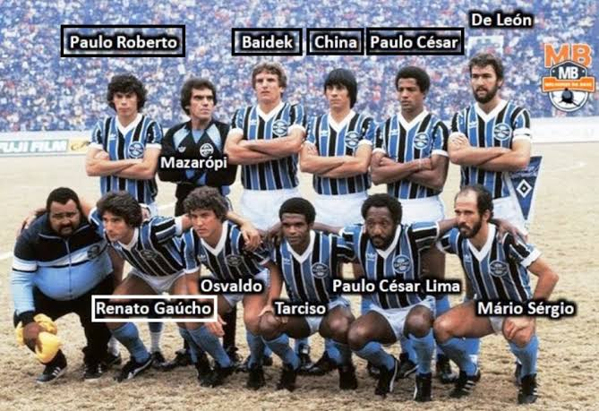

A nivel internacional, o Grêmio foi, igualmente, o clube gaúcho pioneiro em conquistas. O primeiro título da Copa Libertadores da América foi em 1983, após vencer a final contra o forte time do Peñarol, que havia conquistado a Copa Europeia/Sul-Americana de 1982
Grêmio: Mazarópi, Paulo Roberto, Baidek, Hugo De León e Casemiro; China, Osvaldo e Tita; Renato, Caio (César) e Tarciso. Técnico: Valdir Espinosa
 HOME ESCALAÇÃO ANTIGA ESCALAÇÃO NOVA